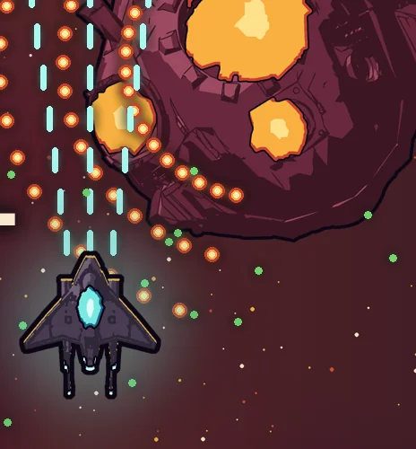
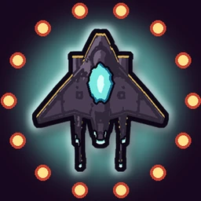

STARKEEL
Fácil de jogar. Desvie, colete, faça combos.
Pilote uma nave-lanterna por nove setores criados à mão e enfrente 39 chefes.
STARKEEL é um shooter espacial vertical feito para celular. Sua nave atira sozinha. Arraste o dedo em qualquer ponto da tela para se mover, assim o dedo nunca cobre a nave, e desvie das balas laranja enquanto sua build fica mais forte. Uma build forte quase joga sozinha.
- Gênero
- Shooter vertical, roguelite
- Plataforma
- Android
- Preço
- Grátis para experimentar, compra única
- Idiomas
- Inglês, português (Brasil), espanhol, francês, italiano, alemão
- Funciona
- Offline, sem anúncios
Imagens
Uma olhada no jogo


Destaques
Por que você vai continuar jogando
Fácil de aprender
Arraste em qualquer lugar para pilotar, o tiro é automático. Só o pontinho no centro da nave pode ser atingido, e cada inimigo sempre se move e atira do mesmo jeito, então você aprende um padrão uma vez só.
Combos Crosslink
Cada arma deixa a própria marca. Acerte um inimigo marcado com outra arma e as duas formam um combo. 14 armas, 10 lentes e 15 pares para descobrir.
Nove setores, 39 chefes
Cada setor tem visual, música, inimigos e perigos próprios, dois chefes intermediários e um chefe do setor com vários atos. Escolha uma rota e encontre os chefes bônus escondidos.
A Oficina
Traga sucata e núcleos de volta para liberar naves, pilotos, peças e pesquisas entre as corridas. Ganhe estrelas para abrir os próximos setores.
Feito para jogar de novo
Um layout novo a cada corrida, mais os modos Infinito, Maratona, Corrida de Chefes, Semente Diária e Desafio Semanal, modificadores de Calor e 58 troféus.
Grátis para experimentar
O tutorial e os dois primeiros setores são grátis. Uma única compra desbloqueia o jogo completo, e seu progresso continua. Sem anúncios, funciona offline.